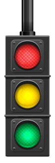
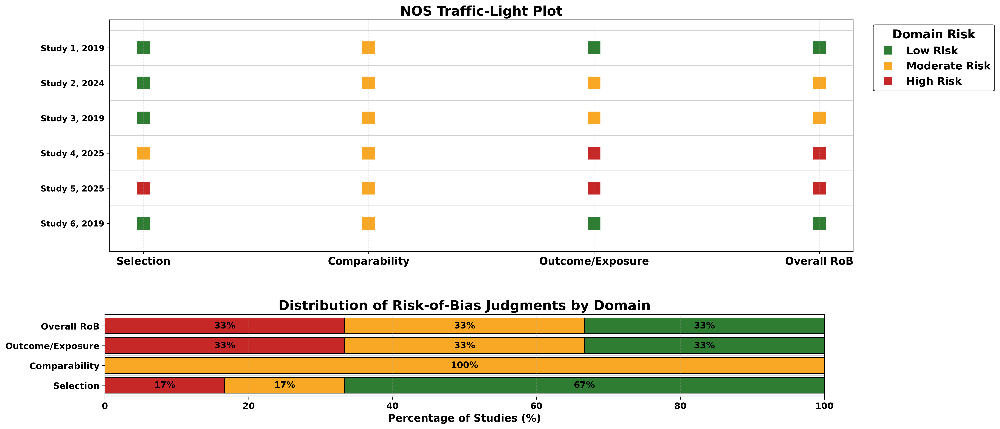
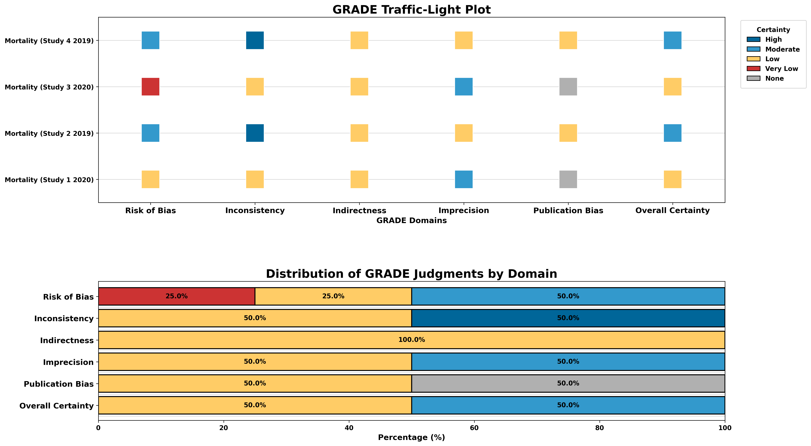
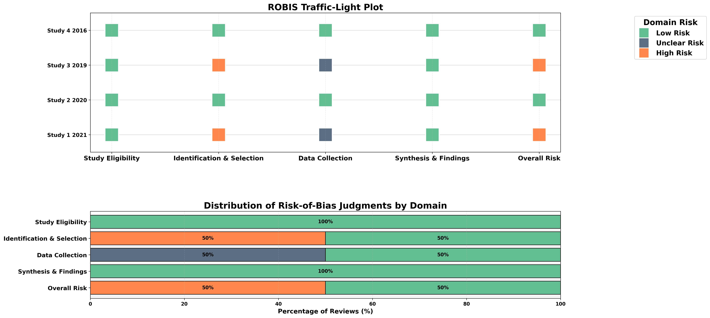
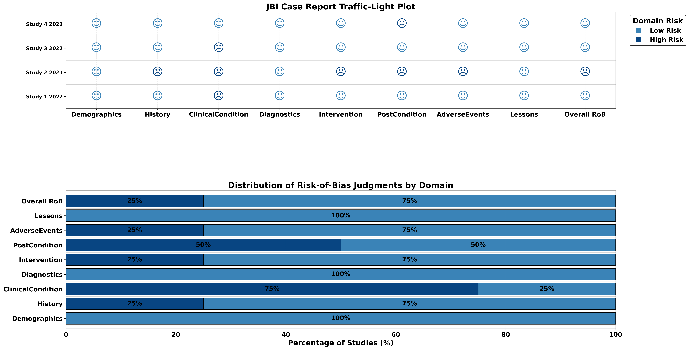
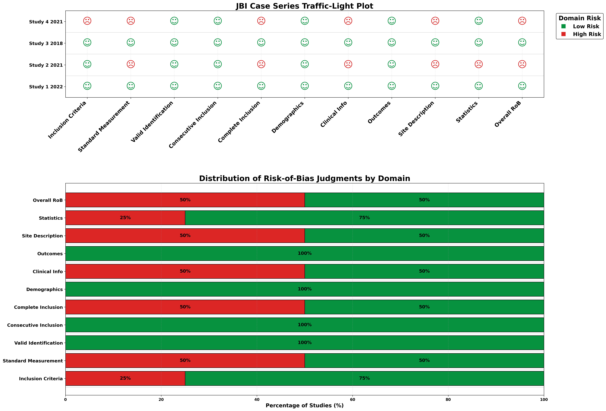

Critiplot
A Critical Appraisal Plot Visualiser for Risk of Bias Assessments


About
Critiplot is a free, open-source tool for generating publication-quality risk of bias assessment figures. It supports multiple assessment tools like NOS, GRADE, ROBIS and JBI, making it easier for researchers to visualize their systematic review and meta-analysis results.
I created this tool after noticing a significant gap in accessible, user-friendly visualization options for risk of bias assessments for those assessments which lacked support using standardized tools like Robvis. Researchers were spending countless hours manually creating plots or struggling with complex software that required advanced technical skills.
Critiplot aims to make risk of bias visualization accessible to all researchers, ensure reproducibility in evidence synthesis workflows and save valuable time that can be better spent on analysis and interpretation.
Supported Tools
NOS
Newcastle-Ottawa Scale
GRADE
Certainty of Evidence
ROBIS
Risk of Bias in Systematic Reviews
JBI Case Report
Case Report Assessment
JBI Case Series
Case Series Assessment
Some of the Visualization Examples

NOS Figure

GRADE Figure

ROBIS Figure

JBI Case Report

JBI Case Series

Application Interface